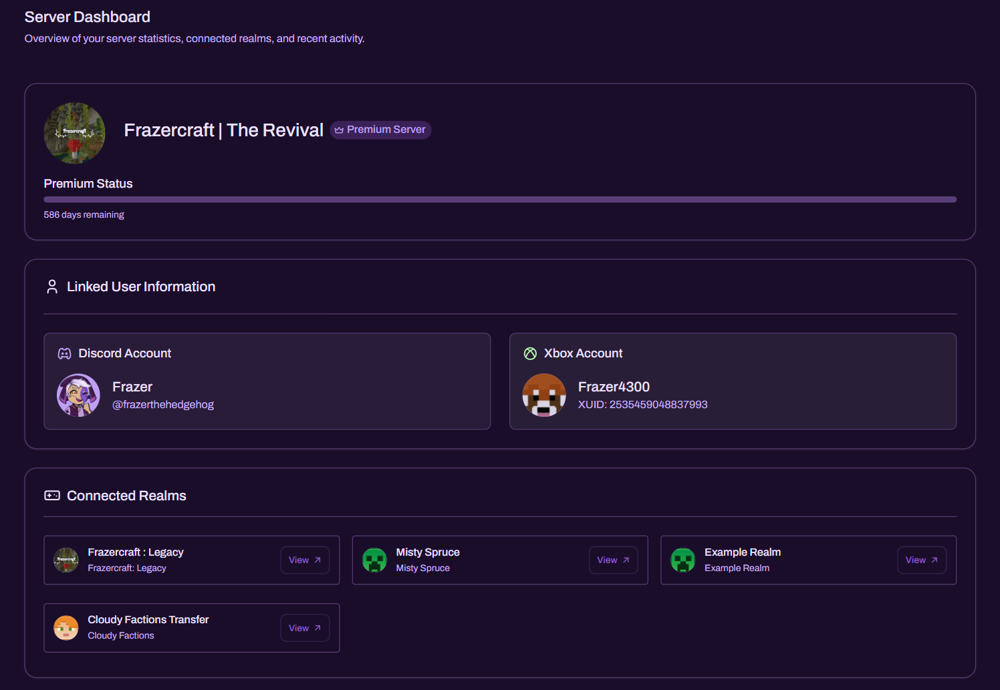
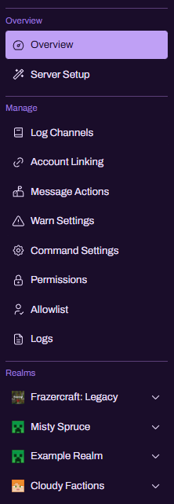

#
Server Dashboard

The Server Dashboard is the central control panel for your Discord server within Realm Bot. It provides:
- A high-level overview of your server’s current status (including Premium state)
- Confirmation of which Discord and Xbox accounts are linked
- A list of connected Realms with quick “View” access
- A structured navigation sidebar for all server-wide configuration pages

#
What the Server Dashboard is for
Use the Server Dashboard to:
- Confirm the server is connected and configured correctly
- Verify the correct linked accounts are being used for management and Realm access
- Navigate to server-wide settings (logging, permissions, command configuration)
- Jump into Realm-specific dashboards from the Connected Realms list
This page is intended as an at-a-glance operational overview, while the sidebar contains the detailed configuration pages.
#
Premium Status
The top section shows your server identity and Premium indicator (when applicable), alongside a Premium Status progress bar and remaining time.
Typical uses:
- Confirm Premium is active before configuring Premium-only modules
- Validate remaining subscription time for operational planning
Note: Some features and modules may only function when Premium is active for the server.
#
Linked User Information
The Linked User Information section confirms the identities attached to this server configuration.
It typically includes:
#
Discord Account
- The Discord profile currently linked to the server dashboard context
- Username and handle (as displayed on Discord)
#
Xbox Account
- The Xbox gamertag currently linked for Realm access
- An identifier such as XUID (Xbox User ID), where shown
This section is important for troubleshooting:
- Missing Realms often indicates the wrong Microsoft/Xbox account is linked.
- Unexpected permissions or access issues can be caused by linking a non-owner account.
#
Connected Realms
The Connected Realms panel displays all Realms detected/connected under your linked Xbox account(s). Each Realm card typically includes:
- Realm name and sub-label (if applicable)
- A View button to open that Realm’s dashboard pages
This is the fastest way to switch between Realms without searching through menus.
Operational guidance:
- Keep Realm naming consistent so staff can identify the correct Realm quickly.
- If a Realm is missing, verify account linking and permissions first.
#
Navigation Sidebar
The left sidebar is the entry point to all Server Dashboard pages and is divided into clear sections.

#
Overview
- Overview - the page you are currently viewing
- Server Setup - guided or consolidated setup tooling (where available)
#
Manage
Server-wide configuration pages used for daily operations:
- Log Channels - choose where operational logs are posted
- Account Linking - manage Discord/Microsoft linking state and related flows
- Message Actions - configure automated message behaviours (where supported)
- Warn Settings - configure warning/discipline behaviour and thresholds (where supported)
- Command Settings - control how commands display information
- Permissions - define who can access server features and dashboards
- Allowlist - restrict access to approved users/roles (where applicable)
- Logs - view recorded events and administrative activity (where available)
#
Realms
A list of all connected Realms is shown at the bottom. Selecting a Realm expands its available Realm pages and configuration areas.
Best Practice: Treat server-wide settings (permissions, allowlist, command controls) as your security foundation before enabling high-impact modules on individual Realms.
#
Recommended Setup Order
For a clean, secure deployment:
- Confirm Premium status (if applicable)
- Verify Linked User Information (correct Discord + Xbox account)
- Confirm your Realms appear under Connected Realms
- Configure Permissions / Allowlist before enabling staff tooling
- Configure Log Channels so actions are auditable
- Proceed into Realm-specific pages for modules and world configuration
#
Common Issues
#
“My Realms are not showing.”
- Ensure the correct Microsoft/Xbox account is linked.
- Re-run the linking flow in Account Linking if needed.
- Confirm the account actually owns or has access to the Realms expected.
#
“Staff can see things they shouldn’t.”
- Review Permissions and Allowlist first.
- Restrict high-impact areas to trusted administrator roles only.
#
“I can’t access a page from the sidebar.”
- Confirm your role has permission for that section.
- Ensure the bot has the required Discord permissions in the server.